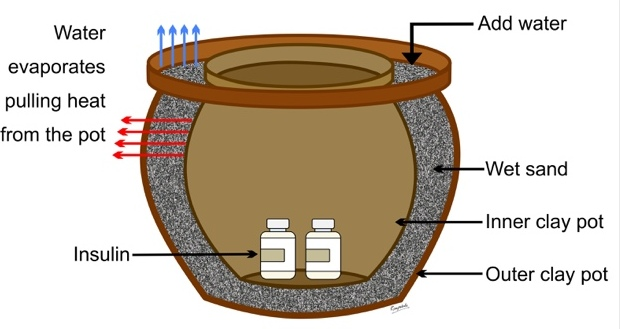

when i design this website my main concern is to share experience from my life style in university with diabetes. For the first time i was confused about all things,such as how and where to keep my medicien,what to eat,how to control my blood glucose.In my life time the hardest time was that i pass in first semester,specially the first two weeks were hard because i didn't have enough information about the things i listed above.By the help of this website students learn about diabetes and how to coop up with challenges that come by it.store your medicien in plastic which contain the mixture of sand and water.Eat what is recommended,keep your hygiene,get enough rest, don't be stressed,measure your blood glucose level at least in two weeks,drink sufficient water to not to be dehydreted,and inject your insuline as the indicated by your doctor.
